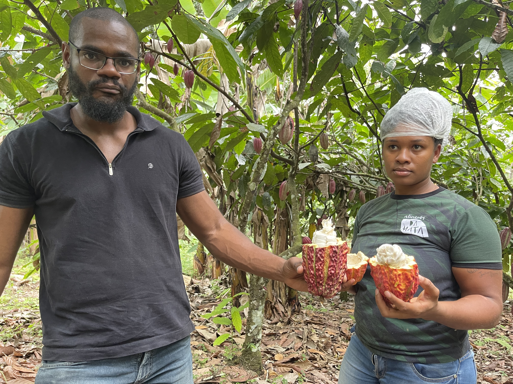

The Magic of Terroir: How Place Shapes the Extraordinary Flavors of Cacao
In the world of craft chocolate, few concepts are as captivating as terroir—that elusive French term borrowed from winemaking that describes how a specific place imprints its character onto what it produces. Just as a Pinot Noir from Burgundy tastes unmistakably of its limestone soils and cool mists, cacao beans carry the signature of their environment: the minerals in the earth, the rhythm of rain and sun, the whisper of surrounding forests, and even the age of the trees themselves.
At Agroverse, we work directly with regenerative cacao farms in Brazil, where terroir isn't just a marketing buzzword—it's the living story behind every bean we source. Three of our standout shipments beautifully illustrate this diversity: AGL4 from Oscar's ancient Criolla grove in Bahia, the ever-popular AGL6 (currently out of stock) from São Jorge Farm in Itajuípe, Bahia, and the award-winning AGL8 from Paulo's farm deep in the Amazon rainforest in Pará. These lots range from timeless velvety depth to gentle nutty subtlety and bold transformative earthiness—proof that even within the same country, terroir creates profoundly different experiences.
Join us as we explore how these elements come together to create cacao taste profiles that are as unique as fingerprints.
What Is Terroir in Cacao?
Terroir encompasses every environmental factor that influences a cacao tree throughout its life: soil composition, climate patterns, altitude, topography, surrounding biodiversity, and human practices like agroforestry. These elements affect nutrient uptake, stress responses, and the development of flavor precursors inside the bean.
Unlike commodity cacao grown in monocultures for maximum yield, fine-flavor cacao shines when farmers nurture the land. Scientific research shows that soil minerals, microbial activity, and environmental conditions directly influence the volatile compounds responsible for aroma and taste. Our regenerative approach amplifies these natural expressions, resulting in healthier ecosystems and more nuanced, vibrant cacao.
Soil Composition: The Foundation of Flavor
Soil is the starting point, delivering minerals that shape everything from texture to aroma.
In Bahia, where both AGL4 and AGL6 originate, soils are rich in organic matter from remnants of the Atlantic Forest. For AGL4, from Oscar's farm, these balanced conditions support ancient Criolla trees, leading to elevated cocoa butter content and that signature buttery mouthfeel that wraps luxuriously around the tongue. The steady nutrient supply minimizes stress, allowing energy to go toward rich fat synthesis and smooth, velvety profiles.
AGL6, from São Jorge Farm in Itajuípe, reflects a slightly different soil dynamic within the same region—nourished by the organic cycling of cabruca agroforestry systems. This contributes to its milder, more subtle character, with rich nutty notes emerging alongside gentle fruity and floral layers. The soil's microbial richness fosters approachable complexity without intensity.
In contrast, the nutrient-dense, dynamic soils of the Amazon in Pará give AGL8 its bold earthy precursors, like tobacco and smokiness, that form during fermentation.
Regenerative practices—composting, cover crops, and minimal disturbance—enhance soil health across all our farms, refining flavors season after season.
Climate and Regional Character: Bahia's Balance vs. the Amazon's Intensity
Brazil's regions offer striking contrasts.
Bahia's warmer, seasonal climate with distinct wet and dry periods promotes steady pod development. In AGL4, this rhythm yields low acidity and profound depth: rich, smooth chocolate with earthy wood undertones. For AGL6, the same regional climate, tempered by dense cabruca shading, creates a softer expression—mild and gentle, with subtle nutty, fruity, and floral notes that unfold gradually.
The Amazon rainforest in Pará brings constant high humidity, abundant rainfall, and diffused canopy light. This lush environment produces the protective compounds behind AGL8's initial bold smokiness and tobacco depth, while preserving delicate floral and green notes that emerge later. The transformation is dynamic, reflecting cacao's tropical origins.
Altitude, Topography, and Biodiversity
Brazilian cacao grows at lower elevations, but topography and biodiversity make the difference.
Gentle slopes in Bahia ensure good drainage, concentrating flavors. In the Amazon, river-influenced floodplains add organic richness.
Biodiversity is key in regenerative systems. Our farms integrate cacao with native trees, fruits, and more—regulating temperature, reducing pests, and enriching soil.
The cabruca system at São Jorge Farm for AGL6 is a prime example: cacao grows beneath tall native forest trees, preserving Atlantic Forest biodiversity. This shading reduces stress, resulting in AGL6's soft, approachable profile with nuanced nutty and floral layers that reveal themselves slowly.
In Paulo's Amazon farm, diverse polycultures contribute to AGL8's vibrant green and floral evolution.
The Wisdom of Ancient Trees
Tree maturity profoundly influences depth.
AGL4's 80-year-old Criolla trees have deep roots accessing rare minerals, producing fewer but superior pods with concentrated precursors. This yields exceptional smoothness, velvety texture, and subtle wood undertones—a gravitas younger trees can't match.
While AGL6 comes from mature groves in a cooperative setting, its gentler profile highlights how agroforestry shading can prioritize subtlety over intensity.
Processing: Where Terroir Meets Craft
Fermentation and drying unlock terroir's potential.
In Bahia's drier conditions, gentler fermentation preserves richness in AGL4 and subtlety in AGL6. Amazon humidity drives more vigorous fermentation for AGL8, building bold notes before revealing florals.
Our farmers monitor every step—heap turning, temperature control, sun-drying—to honor the beans' inherent character.
Spotlight: The Tales of AGL4, AGL6, and AGL8
Let's explore them side by side.
AGL4 – Oscar's Farm, Bahia
From 80-year-old Criolla trees: deep, dark European-style chocolate with extraordinarily buttery mouthfeel and velvety smoothness. Low acidity, rich earthy wood undertones—a traditional, profound experience.


Taste Profile
AGL6 – São Jorge Farm, Itajuípe, Bahia (Currently Out of Stock)
A cabruca masterpiece: mild (5/10) and gentle (6/10) with smooth (6/10) complexity. Rich nutty notes (6/10) blend with fruity (5/10) and floral (4/10) layers, unfolding softly for an approachable, contemplative tasting journey. Perfect for those seeking refined nuance from regenerative biodiversity.


Taste Profile
AGL8 – Paulo's La do Sitio, Pará, Amazon Rainforest
Award-winning and transformative: opens with bold smokiness (8/10) and deep tobacco (7/10), evolving into fresh green (6/10) and delicate floral (7/10) vibrancy. A dynamic intensity of 9/10 that captures Amazonian wildness.

Taste Profile
Why Regenerative Practices Matter for Flavor
Regenerative agroforestry builds resilient soils, sequesters carbon, and fosters biodiversity—all translating to superior taste. Monocultures flatten profiles; diverse systems like cabruca in Bahia or polycultures in the Amazon create layers of flavor—from AGL4's depth to AGL6's subtlety and AGL8's evolution.
At Agroverse, every shipment reflects this harmony between land and craft.
Conclusion: Savor the Story in Every Bite
Terroir shows chocolate as a true agricultural art, rooted in place, time, and care. From Bahia's ancient groves and shaded cabruca to the Amazon's emerald intensity, our shipments like AGL4, AGL6, and AGL8 reveal endless variety.
Ready to taste terroir? Explore our current offerings at agroverse.shop and discover the stories waiting on your palate.